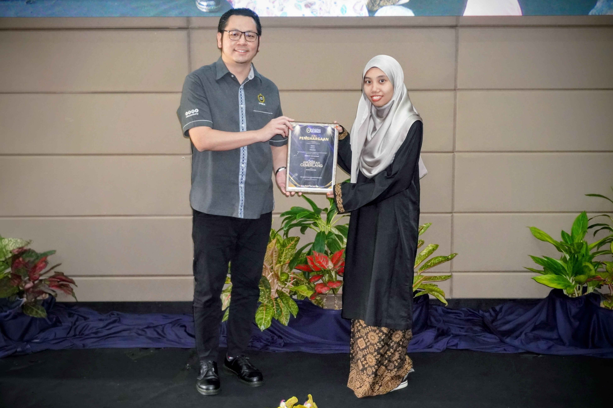

Dean's Award Recipient
Received Dean's Award for academic excellence in Semester I Session 2024/2025 during Majlis Anugerah Cemerlang at UniSZA.
Leadership and Involvement
These activities show teamwork, communication, organization, and responsibility outside technical coursework.
Received Dean's Award for academic excellence in Semester I Session 2024/2025 during Majlis Anugerah Cemerlang at UniSZA.
Registration and Certificate Committee Member. Managed participant registration, attendance records, certificate preparation, and committee coordination.
Food and Beverage Committee Member. Assisted with food arrangements, event logistics, operational planning, and teamwork during the program.

This recognition shows my consistency, discipline, and commitment to academic performance. It also supports my career preparation because cybersecurity requires continuous learning, focus, and responsibility.